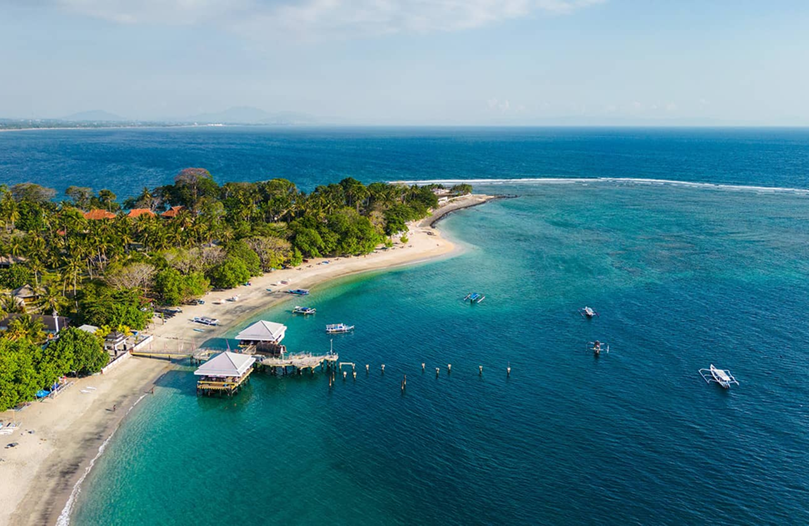
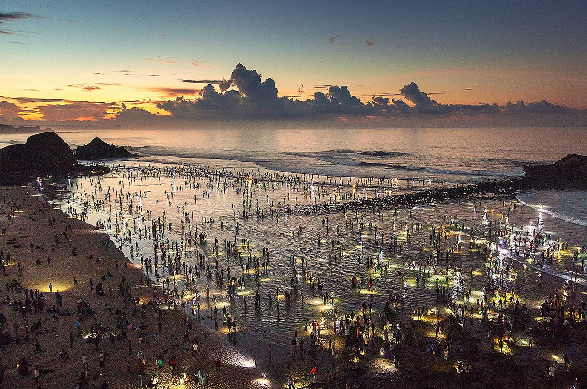

Recommended Destinations

Selong Belanak Beach
Located in South Lombok, this beach offers a peaceful setting and stunning sunsets. Perfect for surfing and relaxing.
Rinjani Mountain
The second highest volcano in Indonesia. Ideal for hikers and adventurers who seek breathtaking views.

Gili Meno
A peaceful island north of Lombok, perfect for snorkeling, diving, and a quiet getaway.

Tanjung Aan Beach
Famous for its pepper-like sand and turquoise water. Great for beach lovers and sunbathers.

Pink Beach
One of the few pink sand beaches in the world. A rare and picturesque location for photography and swimming.